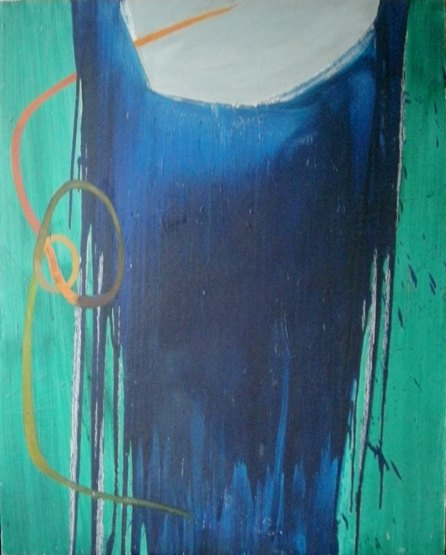
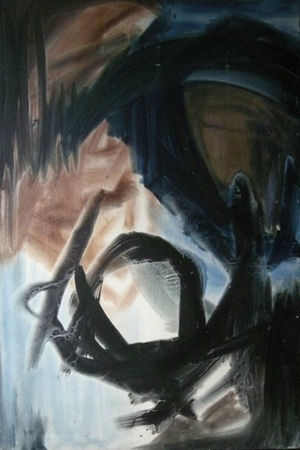
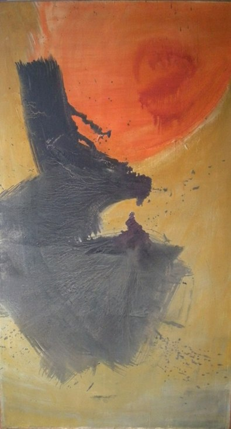
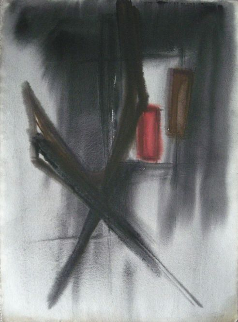
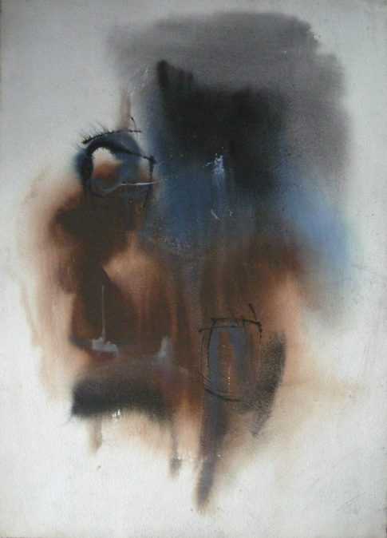
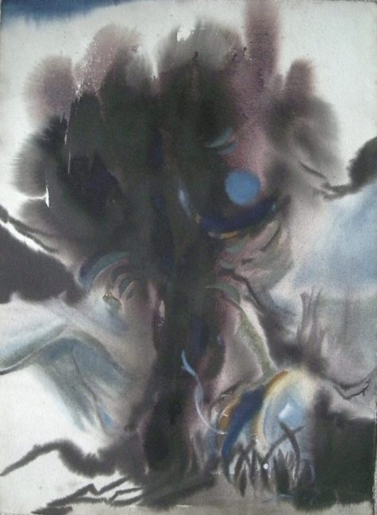
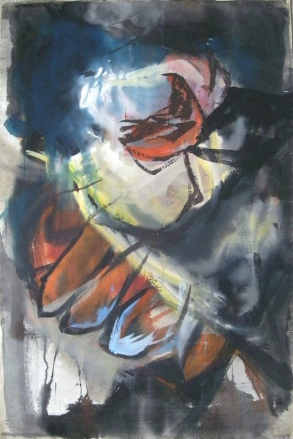

Willy Tirr
1915 – 1991
Artist Biography
Willy Tirr was born to German Jewish parents in Berlin and fled to England as war loomed. Self-taught as an artist, Tirr was interned in the UK and Australia before service in the British Army in intelligence. He was part of the unit that liberated Bergen-Belsen and was involved in the de-Nazification programme in Germany after the war. On his return to England in 1947 he married and moved to Leeds, where his parents had found refuge. Tirr had continued to paint during the war, even having an exhibition in Normandy before the end of hostilities, but helped his family in a lamp-shade business to help make ends meet. By the early 1950s Tirr’s expressionistic landscapes were giving way to a purer abstract style, influenced by the St Ives group in England but also American Abstract Expressionism, Taschism and Zen Buddhism. Tirr started teaching at Leeds College of Art in 1957 and that same year had a joint exhibition at Austin Hayes Gallery in York with Terry Frost. His reputation as an innovative modern artist grew and Tirr from 1957-1973 had solo shows in London in New Vision, Drian, AIA, Rowan, Ben Uri and Grabowski galleries amongst others. Other one-man shows were held in Leeds, Manchester, Newcastle and many other Northern cities and in Switzerland, Australia and Canada. Tirr ran what became Leeds Polytechnic School of Art in a turbulent period in the late 1960s and 1970s; he was then best known for his shaped canvases and watercolours, but his acrylics on canvas were particularly powerful. Inner turmoil and European sensibilities combined to give his work a depth that marks him out as one of the finest abstract and expressionist painters in Britain from the 1950s to the 1970s. His work is held in many British public collections, though mainly in the North, and in public galleries in Australia and Israel.

Untitled





